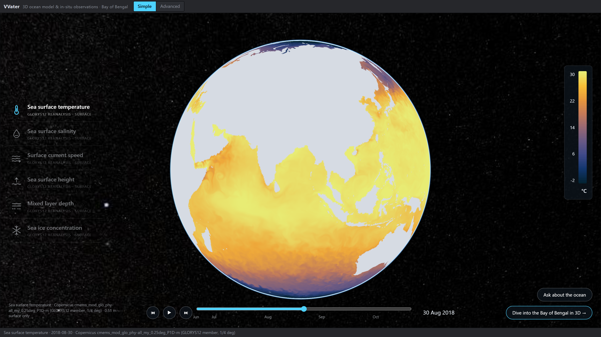
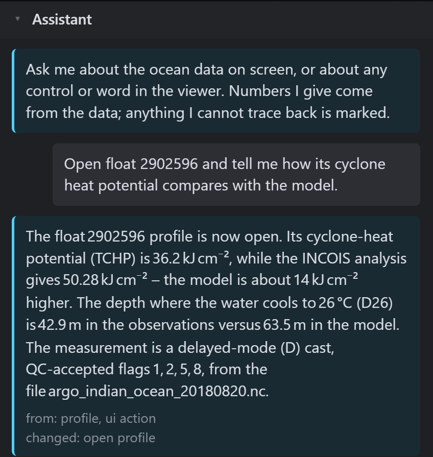
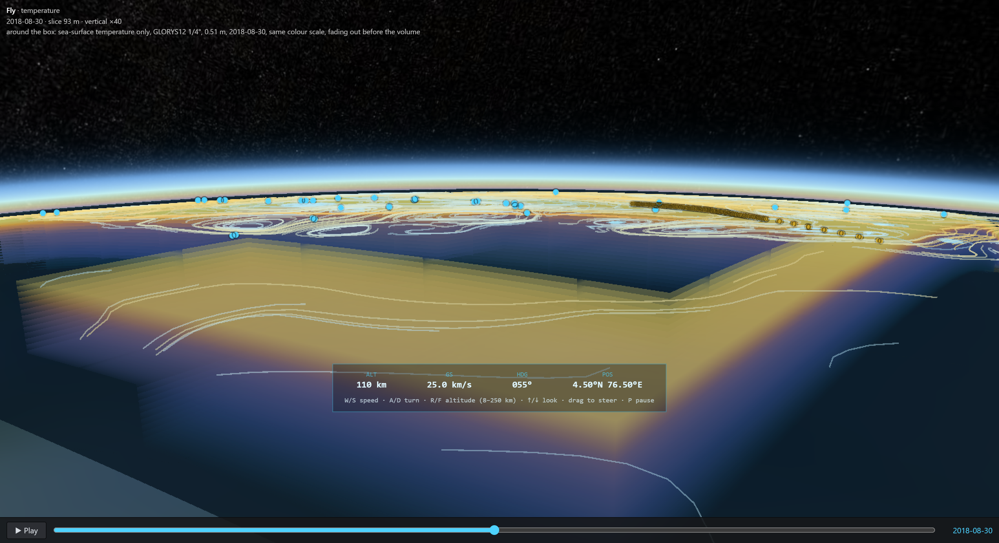

Forecasters get the ocean model and the measurements in separate tools, as flat maps. VVater puts both in one 3D scene in the browser, and you can ask it questions or fly over it.
The problem
- The ocean is 3D; the tools are flatA cyclone feeds on a warm layer tens of metres thick. A surface map cannot show how thick.
- Model and measurements live apartThe model in one program, float and glider files in another; comparing them is done by eye.
What we built
- One link, no installany browser; deployable on INCOIS servers
- Model and measurements in one 3D scenethe INCOIS model with 35 Argo float profiles and 112 glider casts
- Click a float, see the gapits profile against the model, in °C and in cyclone heat potential
- Bad readings stay visiblefailed quality checks drawn red, never dropped



What is new
1 · Ask the ocean in plain words

2 · Fly over the Bay like a plane

- Why it mattersa 2,000 m-deep ocean becomes something a student, a forecaster or a minister can see and move through, not a stack of flat maps
- How to flyW/S speed · A/D turn · R/F altitude · drag to steer